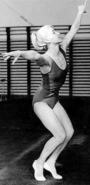

Polina Astakhova (USSR)
1960 and 1964 Olympic AA Bronze Medalist
|
 |
Olympics:
5 Gold, 2 Silver, 2 Bronze |
Polina was born on October 30, 1936 in the Ukranian SSR. During World War II the family had to move several times, and ended up in the polar town of Severouralske. There Polina was diagnosed with a form of tuberculosis. Doctors recommended that she move to a warmer climate, and the family went to Donetsk. At age 13, Polina began gymnastics; she was coached by Vladimir Smirnov. Astakhova competed in three Olympic Games, and became a coach of the USSR women's team and Ukrainian women's team. In 1960, she was awarded a small three-room apartment from the Soviet government. Astakhova died on August 5, 2005.
Competition Results
1954
USSR Championships: 28th AA
1955
USSR Championships: 20th AA
Warsaw International: 1st AA (Group "B")
1956
Olympics: 1st Team, 17th AA
USSR Championships: 3rd AA, 3rd UB, 3rd FX
USSR Spartakiad: 3rd AA
1957
Ukrainian Championships: 1st AA, 1st UB, 1st FX
USSR Championships: 13th AA
1958
Profsoyuz Championships: 1st AA
Ukrainian Championships: 1st AA
USSR Championships: 3rd AA, 3rd V, 2nd UB, 3rd UB, 4th B
World Championships: 1st Team, 7th AA, 3rd
UB
1959
European Championships: 7th AA, 1st B
GDR-USSR Dual Meet: 1st Team, 2nd AA
USSR Championships: 1st AA, 1st UB, 1st FX, 2nd B
USSR Cup: 1st AA, 1st UB, 1st FX, 3rd B
1960
Olympics: 1st Team, 3rd AA, 1st
UB, 2nd FX, 6th V
USSR Championships: 4th AA, 1st UB, 1st FX, 2nd B
USSR Cup: 1st AA
1961
European Championships: 2nd AA, 1st UB,
1st B, 2nd FX
USA-USSR Dual Meet (Pennsylvania): 1st Team
USSR-USA Dual Meet (Moscow): 1st Team, 1st AA, 1st B, 1st FX, 2nd UB
USSR Championships: 2nd AA, 1st B, 2nd UB, 2nd FX, 5th V
USSR Cup: 5th AA, 1st B, 2nd UB,
1962
USSR Championships: 3rd AA, 2nd UB, 3rd FX, 5th B
USSR Cup: 4th AA,
World Championships: 1st Team, 8th AA, 4th UB, 4th
FX
1963
USSR Championships: 3rd AA, 1st UB, 2nd FX, 4th B
USSR Cup: 1st AA, 1st UB, 1st FX, 2nd V, 2nd B
1964
Olympics: 1st Team, 3rd AA, 1st
UB, 2nd FX, 4th B
SWE-USSR Dual Meet: 1st Team, 2nd AA
USSR Championships: 1st FX, 2nd UB
USSR Cup: 5th AA
1965
USSR Championships: 2nd AA, 3rd B
USSR Cup: 1st AA
1966
Tiflis Invitational: 3rd AA
USSR Championships: 3rd AA, 4th FX, 6th B
USSR Cup: 8th AA
USSR World Trials: 3rd AA
World Championships: 2nd Team, 13th AA, 5th UB
1967
USSR Championships: 4th AA, 3rd UB, 4th B
USSR Spartakiade: 4th AA
This page was created on March 10, 2000
and was last updated on May 25, 2026.
© Gymn Forum